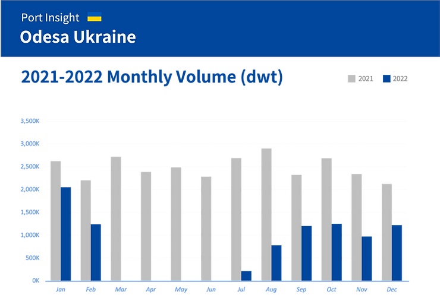

지난 2022년 2월 24일, 우크라이나는 당국 최대의 컨테이너항 오데사 항을 폐쇄했고 머스크, MSC, CMA 등 유럽 선사는 우크라이나 화물의 인수를 중단했습니다. 그로부터 약 1년의 시간이 흐른 2023년 3월 6일, 덴마크 선사 머스크는 전세계에서 우크라이나로의 선적 예약을 재개했다고 소식을 알렸습니다. 또한 우크라이나 오데사 근교 레니 항과 루마니아의 콘스탄차 항을 연결하는 바지선 서비스를 새롭게 운영하며, 새로 개설하는 바지 운송 서비스는 콘스타차 항에서 레니 항까지 1.5일이 걸린다고 합니다. 우크라이나 전쟁은 여전히 진행 중이지만 항구 운영이 정상화되고 무역이 활발이 이뤄지기를 바랍니다.
지난 한 해, 우크라이나 오데사 항구는 어땠을까?
우크라이나는 흑해 11개 항구 및 Azov해에 2개 항구를 보유하고 있으며(크림 지역 5개 항구 제외), 우크라이나내 해상 항만은
연간 2.6억톤의 화물 처리가 가능하고, 연간 해상운송 물동량은 약 1.6억톤 가량 됩니다. (2019년, 2020년 기준) 오데사는
우크라이나에서 세번째로 큰 도시이며, 우크라이나의 해운 수출입의 대부분을 처리하는 최대 항구도시입니다.
그렇다면 지난 한 해, 우크라이나 오데사 항구는 어땠을까요? Port Insight를 통해 물동량 통계를 전년도와 비교하여 한 번
알아보도록 하겠습니다.
씨벤티지 Port Insight 데이터에 따르면, 오데사 항의 월간 물동량은(dwt) 2021년 대비 2022년에 현저히 감소한 것으로 나타났습니다. 이는 항구 폐쇄에 따른 결과로 보여지며, 그래프에서 보는바와 같이 2021년에는 월 평균 2500K dwt 수준으로 유지되어 온 것과 달리, 2022년 전체 물동량은 70% 가까이 큰 폭으로 감소한 것을 알 수 있습니다.
 Monthly Volume(dwt) Average in Odesa, Ukraine Previous Calling portPort Insight에서 제공되는 previous calling port 통계는 해당 항구에 도착한 선박이 과거 어느 국가로 부터 왔는지 직전 항구(국가)에 따른 물동량 데이터를 보여줍니다. 오데사 항에 도착한 선박은 어느 나라로부터 가장 많이 왔을까요? 2022년 전체 물동량은 줄었지만, 2021년과 비교해보았을 때 동일하게 터키가 비중이 가장 높은 것으로 나타났습니다. (2021년-28%, 2022년-27%)
- 1. 터키 (27%)
- 2. 루마니아 (9%)
- 3. 스페인 (7%)
- 4. 이탈리아 (6%)
- 5. 러시아 (4%)
Port Insight에서 현재 시점(3월 30일)으로 조회해 본 오데사 항구의 실시간 현황입니다. 씨벤티지의 해양 가시화 플랫폼은 Claas A(dwt 300 ton 이상의 상선)의 선박 데이터를 기반으로 하고 있는데요, 이 부분을 감안하더라도 항구가 정상화되기까지는 조금 더 시간이 필요한 것으로 보입니다. 앞으로도 오데사 항의 데이터를 모니터링하며 곧 정상화되어 무역 및 물류 현황이 안정되기를 기대해봅니다.
<Port Insight Dashboard of Odesa, Ukraine>
씨벤티지가 제공하는 cargo insight, ship insight, 그리고 port insight 는 빅데이터 분석과 AI 기술을 기반으로, 실시간 및
예측 정보가 반영된 공급망 가시화 솔루션입니다. 공급망의 이해 관계자들에게 의사결정에 필요한 신뢰할 수 있는 정보를
적시에 제공하며, 예상하지 못한 해상 운송 중단을 사전에 관리하고 대응할 수 있도록 도와줍니다.
씨벤티지만의 예측모델에 기반한 공급망 가시화 솔루션을 통해 해양 물류에 혁신을 이끌어보세요
Email: sales@seavantage.com
Tel: (+82) 02-3444-7302 / (+82) 02-3444-7303